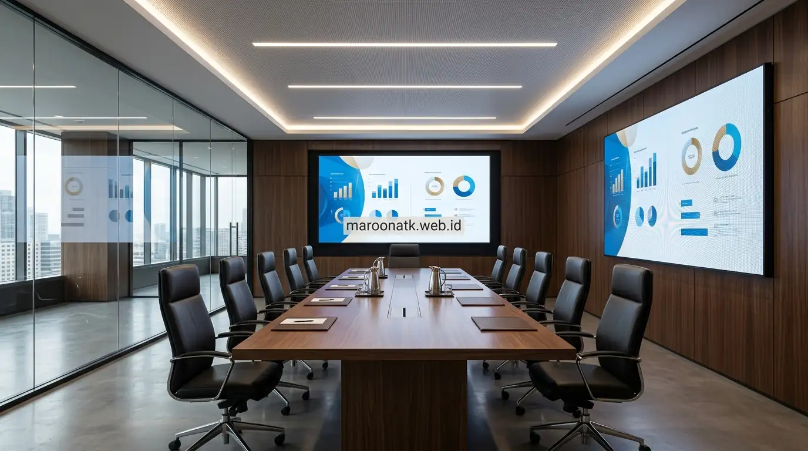

Dalam tata kelola ruang rapat korporat modern berkapasitas 20 hingga 100 orang, keterbacaan data visual merupakan faktor krusial yang menentukan efektivitas pengambilan keputusan strategis. Kendala visual pada ruang berukuran luas sering kali bersumber dari penggunaan perangkat display konvensional yang tidak proporsional dengan dimensi ruangan.
Tantangan Visibilitas Layar pada Ruang Rapat dan Boardroom Skala Besar
Pemasangan videotron LED untuk meeting room menjadi solusi visual terpadu pada ruang rapat skala besar karena menyajikan bentang layar masif tanpa batas bingkai (seamless bezel-free), tingkat kecerahan tinggi yang kebal terhadap pantulan cahaya ruangan (ambient light), serta ketajaman pixel pitch halus. Hal ini menjamin materi presentasi, laporan keuangan, dan konferensi hybrid terlihat jernih hingga ke deretan kursi paling belakang.
Pada banyak gedung perkantoran dan ruang sidang dewan direksi, masalah yang kerap dikeluhkan oleh jajaran pimpinan adalah ketidakmampuan peserta di barisan tengah hingga belakang untuk membaca angka-angka pada tabel proyeksi. Ketika ruang rapat menggunakan televisi komersial berukuran 75 hingga 85 inci, luas bidang gambar kerap kali terlalu sempit untuk ruangan dengan panjang lebih dari 8 meter.
Di sisi lain, penggunaan proyektor konvensional sering menghadapi keterbatasan kontras. Lampu proyektor sangat rentan terhadap paparan cahaya lampu plafon kantor dan jendela kaca, sehingga warna gambar terlihat pudar (washed out). Kondisi ini memaksa tim untuk meredupkan lampu ruangan saat rapat berlangsung, yang justru menurunkan konsentrasi dan kenyamanan kerja para peserta rapat.

Keunggulan Videotron LED Dibandingkan Proyektor untuk Ruang Rapat
Analisis perbandingan komparatif kontras, efisiensi pencahayaan, dan umur pakai perangkat display rapat.
Mengapa Videotron LED Menjadi Standar Baru Ruang Rapat Modern?
Mengintegrasikan videotron LED untuk meeting room memberikan lompatan kualitas visual yang signifikan bagi fasilitas rapat korporat. Berikut adalah sejumlah keunggulan mendasar teknologi LED video wall:
1. Tampilan Utuh Tanpa Garis Sambungan (Seamless Display)
Berbeda dengan susunan video wall LCD yang masih memiliki garis sekat (bezel gap) di antara panel-panelnya, videotron LED dirakit dari modul-modul kabinet presisi yang saling mengunci rapat. Hasilnya adalah satu bidang layar raksasa yang sepenuhnya mulus, membuat bagan organisasi, peta operasional, atau presentasi teknis tampil utuh tanpa terpotong garis bingkai.
2. Kecerahan Superior dan Kontras Rasio Alami
Dioda LED memancarkan cahaya mandiri (self-emissive), menghasilkan tingkat kecerahan mulai dari 600 hingga 1.000 nits pada penggunaan indoor. Didukung tingkat hitam pekat dan rasio kontras tinggi, teks hitam di atas latar putih atau grafik berwarna cerah tetap terlihat tajam dan kontras walau seluruh lampu ruangan dinyalakan secara maksimal.
3. Sudut Pandang Luas (Ultra-Wide Viewing Angle)
Teknologi surface-mounted device (SMD) dan chip-on-board (COB) pada LED video wall modern memungkinkan sudut pandang horizontal dan vertikal hingga 160–170 derajat. Peserta rapat yang duduk di sudut ruangan atau di ujung meja panjang tetap dapat melihat gambar dengan warna yang akurat tanpa mengalami distorsi atau perubahan kontras.

Modul LED dengan kerapatan pixel pitch presisi menghadirkan detail visual yang jernih untuk presentasi bisnis dan pemantauan data interaktif.
Memahami Pixel Pitch dan Jarak Pandang Ideal (Viewing Distance)
Kunci keberhasilan implementasi display pada ruang rapat adalah menentukan kerapatan titik lampu atau pixel pitch (jarak antar titik pusat LED dalam satuan milimeter). Semakin kecil angka pixel pitch, semakin rapat resolusi gambar dan semakin dekat jarak pandang yang nyaman tanpa terlihat efek bintik-bintik (pixelation).
Dalam konteks pengadaan B2B untuk produk videotron indoor, berikut klasifikasi umum kebutuhan pixel pitch yang sering diaplikasikan pada ruang kantor:
- P1.25 – P1.56 (Ultra-Fine Pitch): Direkomendasikan untuk ruang rapat eksekutif VIP atau boardroom dengan jarak duduk terdekat sekitar 1,5 hingga 2,5 meter dari layar. Menghasilkan ketajaman setara monitor beresolusi 4K untuk teks rapat kecil.
- P1.86 – P2.0 (Standard Fine Pitch): Pilihan serbaguna untuk ruang rapat divisi skala menengah hingga besar dengan jarak pandang mulai 2,5 hingga 4 meter.
- P2.5 (Medium Pitch): Cocok untuk ruang serbaguna korporat (townhall), auditorium, atau aula pelatihan internal di mana penonton duduk pada jarak minimal 3,5 hingga 6 meter.

Estimasi dan Faktor yang Mempengaruhi Pengadaan Videotron LED Indoor
Pelajari komponen pembentuk anggaran pengadaan videotron, mulai dari kabinet, sistem controller, hingga jasa instalasi.
Inspirasi Penggunaan Konten pada Meeting Room Skala Besar
Pemanfaatan videotron LED pada ruang rapat perusahaan melampaui sekadar sarana menayangkan slide presentasi PowerPoint standar. Fleksibilitas sistem pemrosesan video modern memungkinkan berbagai skenario komunikasi interaktif:
1. Penayangan Multi-Window dan Dashboard Analitik Real-Time
Melalui prosesor video multi-channel, bentang layar videotron dapat dibagi menjadi beberapa area visual aktif (split-screen). Manajemen dapat menampilkan ringkasan laporan keuangan di sisi kiri, grafik performa penjualan di tengah, dan pergerakan stok gudang di sisi kanan secara serentak tanpa perlu berganti-ganti tab aplikasi.
2. Pengalaman Rapat Hybrid Berstandar Enterprise
Dalam era kerja fleksibel, rapat direksi kerap melibatkan peserta tatap muka dan peserta daring melalui platform video conference. Videotron LED dapat mengalokasikan area layar khusus untuk menampilkan galeri video peserta jarak jauh dalam ukuran nyata (life-size), sementara materi rapat utama tetap tersaji lapang di bagian tengah.
3. Pemutaran Video Profil dan Sambutan Tamu Penting
Ketika ruang rapat difungsikan untuk menyambut delegasi investor, mitra bisnis, atau tamu institusional, layar LED raksasa mampu memutar video korporat dengan reproduksi warna sinematik, memberikan kesan profesional dan kredibilitas tinggi bagi entitas perusahaan.
Tabel Komparasi Solusi Display untuk Ruang Rapat Besar
Berikut adalah tabel perbandingan karakteristik antara videotron LED, video wall LCD, dan proyektor laser untuk ruang rapat berkapasitas besar:
| Parameter Kebutuhan | Videotron LED Indoor | LCD Video Wall | Proyektor Laser Kantor |
|---|---|---|---|
| Garis Sambungan (Bezel) | 100% Seamless (tanpa sekat garis) | Terdapat garis sekat (0.88mm - 3.5mm) | Seamless pada layar tunggal |
| Ketahanan terhadap Cahaya Lampu | Sangat tinggi (kontras tetap tajam di ruangan terang) | Tinggi, namun rentan pantulan silau kaca | Rendah, warna pudar jika lampu ruangan menyala |
| Masa Pakai Operasional | Hingga 80.000 – 100.000 jam | Rata-rata 50.000 jam | 20.000 – 30.000 jam (sumber laser) |
| Akses Perawatan (Maintenance) | Front-service per modul tanpa bongkar dinding | Perlu braket pop-out khusus per unit panel | Pembersihan optik dan filter udara berkala |
| Fleksibilitas Rasio Ukuran | Kustom sesuai dimensi dinding ruangan | Terbatas pada kelipatan diagonal panel 55 inci | Tergantung jarak tembak lensa (throw ratio) |

Layanan Pemasangan Videotron Jakarta: Tahapan Instalasi Rapi dan Aman
Proses instalasi rangka struktur braket dinding dan commissioning teknis videotron indoor berstandar korporat.
Checklist Teknis Sebelum Melakukan Pengadaan Videotron Ruang Rapat
Untuk memastikan pengadaan sistem display videotron LED berjalan sesuai kebutuhan operasional dan tata ruang perusahaan, tim purchasing dan general affairs perlu memeriksa poin-poin penting berikut:
- Analisis Dimensi Ruang dan Jarak Duduk: Ukur tinggi plafon, lebar dinding utama, serta jarak dari dinding display ke meja pimpinan terdekat guna menentukan resolusi modul yang tepat.
- Kekuatan Struktur Dinding: Pastikan dinding bata, beton, atau partisi gypsum telah dilengkapi perkuatan struktur rangka hollow untuk menahan beban kabinet die-cast aluminium.
- Kapasitas Daya dan Jalur Kelistrikan: Siapkan sirkuit panel listrik khusus dengan grounding stabil untuk melindungi komponen digital sensitif dari fluktuasi voltase.
- Integrasi Input Audio-Visual: Rencanakan titik sambungan HDMI, konektivitas wireless presentation, switcher matrix, serta mikrofon ruangan agar kabel tertata rapi di dalam dinding atau meja meeting.
- Ketersediaan Front Service Access: Pastikan modul LED yang dipilih mendukung pelepasan dari sisi depan untuk memudahkan pemeliharaan tanpa mengganggu ornamen interior dinding.
Konsultasikan Kebutuhan Pengadaan Anda
Diskusikan kebutuhan produk dan pengadaan perusahaan Anda bersama tim MAROON ATK untuk mendapatkan solusi display ruang rapat yang tepat guna.
Kesimpulan: Investasi Visual Terpadu untuk Produktivitas Rapat
Rangkuman Poin Penting
Pemanfaatan videotron LED pada ruang rapat berskala besar mentransformasi cara dewan direksi dan manajemen berinteraksi dengan informasi bisnis.
- Visibilitas Tanpa Batas: Seluruh peserta rapat di baris belakang dapat membaca rincian data presentasi dengan tingkat kontras dan kecerahan optimal.
- Kerapatan Pixel Presisi: Pemilihan pixel pitch fine-pitch (P1.2 – P1.8) memberikan kenyamanan visual jangka panjang tanpa silau berlebih.
- Sinergi Rapat Modern: Mendukung kolaborasi hybrid dan penayangan multi-window untuk pemantauan data real-time yang lebih dinamis.
Dalam proses perencanaan B2B, persiapan teknis terkait tata letak ruangan, jalur kabel tersembunyi, dan pemilihan modul berkualitas merupakan langkah penting untuk mencapai hasil instalasi yang rapi dan tahan lama.
Pertanyaan Umum (FAQ) Videotron LED Meeting Room
Videotron LED indoor menghasilkan tingkat kecerahan tinggi, rasio kontras superior, dan ketajaman warna murni tanpa terpengaruh oleh pencahayaan lampu ruangan atau kaca luar (ambient light), serta tidak terganggu oleh bayangan presenter seperti pada proyektor konvensional.
Untuk ruang rapat dan boardroom, pixel pitch ideal berkisar antara P1.2 hingga P1.86. Pemilihan pitch rapat (fine pitch) ini memastikan detail teks presentasi spreadsheet, grafik analitik, dan video conference tetap tajam dan terbaca jelas meski dilihat dari jarak dekat 1,5 hingga 3 meter.
Ya, melalui bantuan video processor berkualitas tinggi, layar videotron dapat dibagi menjadi beberapa window independen (split-screen/PIP) untuk menampilkan dashboard analitik bisnis, presentasi materi, dan feed kamera video conference secara simultan.
Videotron LED indoor modern umumnya menggunakan sistem front-service access magnetik. Modul LED, power supply, dan receiving card dapat dilepas dan diganti dari sisi depan layar menggunakan alat vakum khusus tanpa perlu membongkar seluruh struktur dinding.
Persiapan penting mencakup struktur dinding yang mampu menopang beban bracket, pasokan daya listrik yang stabil dengan grounding memadai, jalur konduit kabel data/audio visual tersembunyi, serta ventilasi udara di sekitar kabinet display.

Arby Ardiansyah
Praktisi pengadaan B2B berpengalaman dalam tata kelola perlengkapan kantor, integrasi perangkat display audio-visual, dan standardisasi efisiensi fasilitas kerja korporat di Indonesia.